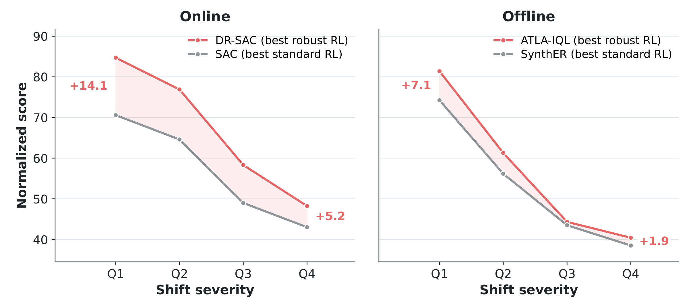

In each setting, online and offline, the two algorithms are selected by overall performance: among the robust and among the standard algorithms of the setting, we take the one with the highest score under shift, averaged over all tasks and shift conditions of the library-wide evaluation. Online, this selects DR-SAC from the 6 robust algorithms and SAC from the 2 standard algorithms. Offline, it selects ATLA-IQL from the 8 robust algorithms and SynthER from the 4 standard algorithms.

Online, the best robust algorithm stays above the best standard algorithm at every severity level. The gap is +14.1 at Q1 and +5.2 at Q4. Over all levels DR-SAC scores 66.8 and SAC 56.7.
Offline, the best robust algorithm also stays above the best standard algorithm at every severity level. The gap is +7.1 at Q1 and +1.9 at Q4. Over all levels ATLA-IQL scores 56.9 and SynthER 53.2.